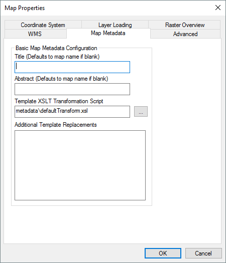
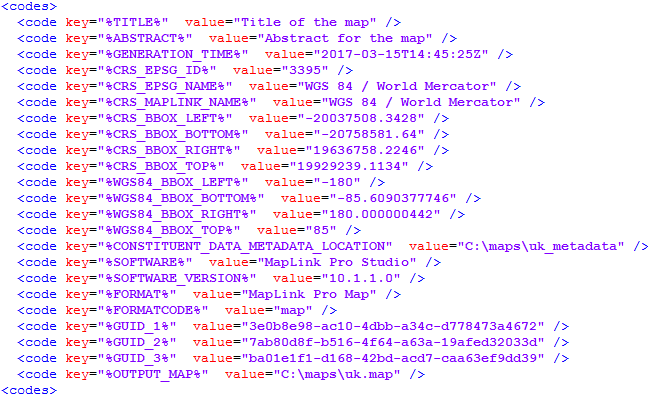

Map Metadata Configuration
Output maps are visualisations of the source data that can be made available to other users for download or distribution. Whilst the underlying data may have ISO19115/19139 compatible metadata, the output map itself may have different unrelated metadata. For example, the map has a 'Generation time' and may need a different title or abstract when it composites multiple data sources. MapLink Pro Studio will automatically generate this map metadata alongside the output "<MAPNAME>.map" file as "<MAPNAME>_metadata.xml". The contents of the file are constructed by processing a values XML file, using a Template XSLT transformation script.

Whilst the default settings should be reasonable for most
situations, this panel allows you to provide specific overrides for the automatic generation. Relative paths in any of these settings are deemed to be relative to the MapLink Pro installed "config" folder. The available overrides are:
- The Title.
This allows a specific text string to be used for the metadata 'Title' element. If left blank, this will default to the map name.
- The Abstract.
This allows a specific text string to be used for the metadata 'Abstract' element. If left blank, this will default to the map name.
- The Template XSLT Transformation.
This allows a custom XSLT tranformation script to be used. A relative path is deemed to be relative to the MapLink Pro "config" folder.
- The Additional Template Replacements.
This box allows new key-value pairs to be added to the intermediate values XML file which is used by the transformation script. This is only necesasry for custom XSLT scripts. Each line should be of the form key=value
The values XML file will be automatically generated alongside the output map file as
"<MAPNAME>_values.xml".

Most values are self explanatory, but the following values have specific meaning:
- %CRS_MAPLINK_NAME% Some Coordinate Reference Systems are not derived from EPSG data. Under those circumstances, the %CRS_EPSG_NAME% value will be empty and this value should be used instead.
- %CONSTITUENT_DATA_METADATA_LOCATION%
For complex output metadata that requires lineage information, this contains the directory where the data file metadata is output. If no data file metadata is generated, either because it was not possible to extract or the relevant generation option was unchecked, then this key/value pair will not exist.
- %GUID_1%, %GUID_2%, %GUID_3%
Some metadata profiles require unique identifiers to be available. These values represent unique values that can be used by the transformation script if required.